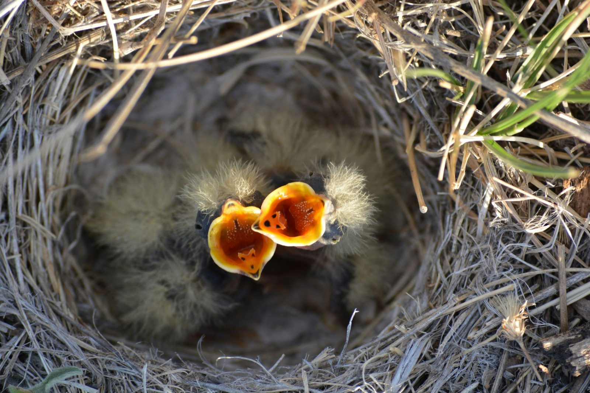

Nära fåglarna. Tillsammans för naturen.
Din tid kan ge
nya vingslag.
Vill du bidra i Fågelcentralens verksamhet? Hitta ett volontäruppdrag där ditt engagemang kan göra skillnad.
Fågelcentralen / Animals HOPE · Kungälv

Hitta ditt sätt att bidra
Aktuella volontäruppdrag
Våra volontärer delar med sig
Därför är vi här.
”… jag lär mig jämt något nytt och ingen dag är den andra lik då man aldrig kan förutse vad som ska hända och vilken patient som ska komma in.”
Läs hela berättelsen från Moa Nalisvaara Engman
Jag började volontärarbeta på Fågelcentralen under min studietid då jag läste till biolog för att få mer kunskap om viltrehabilitering och fåglar i allmänhet samtidigt som jag bidrog till ett gott ändamål. Efter examen kom jag tillbaka då jag trivdes så mycket; jag lär mig jämt något nytt och ingen dag är den andra lik då man aldrig kan förutse vad som ska hända och vilken patient som ska komma in. Tack vare volontärarbetet har jag fått träffa flera arter av fåglar jag ännu inte sett i det vilda, samt fått hjälpa dem till en ny chans i livet. Detta känns extra viktigt i en tid då den biologiska mångfalden är hotad och vi behöver mer engagemang för bevarande av vår natur.
”Det är en fantastisk känsla att kunna få hjälpa ett djur i nöd och samtidigt utvecklas som människa …”
Läs hela berättelsen från Andrea Haglund
Jag har alltid älskat djur och att ta hand om dem, och flera år trodde jag att jag skulle arbeta inom djurvården. Av olika skäl så blev det inte så, och jag utbildade mig till bibliotekarie istället. Men jag ville fortfarande arbeta med djur på något sätt, så när ett inlägg dök upp på Facebook om att Fågelcentralen sökte volontärer nappade jag direkt. Och jag har inte ångrat mig en enda gång att jag tog den kontakten.
Det är en fantastisk känsla att kunna få hjälpa ett djur i nöd och samtidigt utvecklas som människa, då man lär sig en massa om djuren, deras beteenden och behov. När man har varit ifrån Fågelcentralen en period, som under vintern när det är lågsäsong, längtar man verkligen tillbaka!
Ett plus är också den goa sammanhållningen mellan personalen och volontärerna.
”Åkt hem med en värme i hjärtat och tacksamhet varje gång!!”
Läs hela berättelsen från Lorina Stenwall
Hej allesammans!
Jag vill här dela en personlig sak med er…
Jag är volontär på Fågelcentralen, och tycker det är underbart!
Både att få se det fantastiska arbetet som görs på Fågelcentralen, och också från Djurambulansens sida, men också att få personligen känna sig lite delaktig i hela detta fantastiska och så viktiga arbete, känns otroligt fint och hjärtevärmande!!
Jag mår inte så bra i varken kropp el själ, pga. sorg…Och orkar inte så mycket.
Var tveksam till om jag skulle orka vara volontär…
Jag såg en annons från Fågelcentralen på FB, där det efterfrågades fler volontärer…Och kände direkt hur hjärtat hoppade till, och hur jag tänkte ” åååh det skulle jag vilja bli! ” Har velat hjälpa djur med viltrehab.i många år…
Men inte tänkt på FC konstigt nog. .
Lång historia kort,
Jag har nu varit volontär på FC sedan i Maj, lite då o då…Och det har varit kämpigt att komma iväg, och visst blir jag trött efteråt…
Men!! Det ger såå mycket för mig!
Känslan att få släppa mig själv (och det som jag bär på) och göra något gott för andra = våra bevingade Vänner fåglarna!! Men även stötta och hjälpa personalen på FC!
Också trevligt att få träffa några av er andra som är volontärer!
Så fint o spännande att få komma alla dessa fåglar så nära, och många av dem kommer finnas kvar i mitt hjärta för alltid…
Jag ler, myser och tårar rinner…
Åkt hem med en värme i hjärtat och tacksamhet varje gång!!
Tårar har runnit på kinderna för att jag får vara en liten del av detta fantastiska arbete…!!
Tack allesammans! Kram, Lorina Stenwall.
Skicka din ansökan
Fält märkta med * är obligatoriska.
Tack för din ansökan!
Föreningen går igenom ansökningarna och kontaktar dig om nästa steg.
Från intresse till engagemang
Så går det till.
01
Hitta ett uppdrag
Läs beskrivningen och välj det uppdrag som passar ditt intresse.
02
Berätta om dig
Fyll i formuläret. Det går också att lämna en allmän intresseanmälan.
03
Fortsatt kontakt
Föreningen går igenom ansökningarna och kontaktar dig om nästa steg.